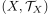
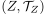
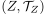
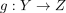
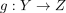
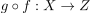

Komposition von Homeomorphismen als Homeomorphismus
1. Satz
Seien ,  und  topologische Räume, so dass Homeomorphismen
und  topologische Räume, so dass Homeomorphismen  und  existieren.
Dann ist
und  existieren.
Dann ist

1
ebenfalls ein Homeomorphismus
2. Beweis
folgt aus der charakterisierung als Homeomorphismus als stetig abgeschlossene/offene Bijektion und